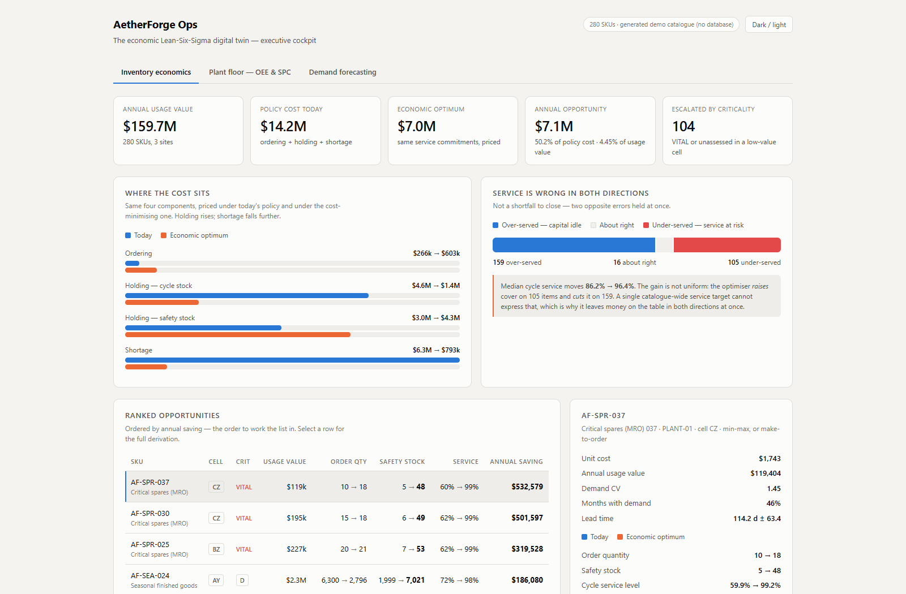

AetherForge Ops
Price the trade-off. Understand the process.
An operations decision prototype linking inventory economics, plant performance and demand forecasting. Its working cockpit exposes the assumptions and trade-offs behind recommendations.

Why this exists.
A single service-level target hides differences between items, and a single plant-performance score hides differences between losses. Operations decisions improve when the cost, uncertainty and failure mechanism are visible together.
How it responds.
AetherForge puts a transparent numerical engine behind a thin API and an interactive cockpit. It compares inventory policies, separates plant losses and evaluates forecasts against held-out periods before translating their errors into safety-stock implications.
- 01
Price
Compare ordering, holding and shortage costs for each inventory policy.
- 02
Segment
Use ABC / XYZ / FSN / VED views to distinguish value, variability and criticality.
- 03
Diagnose
Inspect OEE / TEEP, loss categories, control charts and capability measures.
- 04
Forecast
Run rolling-origin comparisons and connect measured forecast error to buffer requirements.
From inputs to insight.
- Numerical core
- A standard-library Python engine separates formulas and domain validation from I/O.
- API
- FastAPI exposes catalogue analysis, plant studies, forecasts and calculators.
- Cockpit
- A standalone HTML / JavaScript interface renders results from the local API.
- Demo inputs
- A generated catalogue covers 280 SKUs; plant data covers eight assets and 30 days.
Architecture summarized from the project source. Runtime verification is described below.
The working experience.
Understand where policy cost comes from
Ordering, cycle stock, safety stock and shortage are compared on one scale. A ranked item view shows why one service target cannot fit every item. Financial figures here are synthetic scenario outputs.
Separate the losses that matter
The plant view compares OEE with TEEP and ranks assets alongside their dominant loss categories. It connects an overall percentage to the mechanism that an improvement effort would address.
Let uncertainty change the recommendation
The forecasting view reports backtested model choices and the effect of measured forecast error on safety stock. It shows where a forecast lowers the buffer and where it calls for more cover.
Demonstrated, with context.
The standalone cockpit and FastAPI service were run locally. Inventory economics, plant OEE / SPC and demand forecasting views loaded successfully without browser errors. The API explicitly identifies its data as a generated demo catalogue. Dollar opportunities, service levels and plant metrics shown in the screenshots are model outputs on synthetic inputs, not achieved savings or real production outcomes.
Scope & limitations
- This capture uses the standalone cockpit. The separate Next.js entry experience, authentication and persistent database paths were not exercised.
- The forecasting screen exposes both buffer reductions and increases; a model can require more stock when measured error exceeds the original assumption.
- The current system should be described as an operations prototype. A full discrete-event supply-network digital twin and real-world deployment are not established by these views.
- No public repository or stable hosted demo was established from the local project metadata; the case study therefore provides captured evidence rather than an invented live link.
Why it belongs in my portfolio.
Chosen as the additional project because it directly connects MBA operations concepts with engineering judgment: inventory costs, service, plant losses and evidence-based planning.
View my recruiter profile ↗